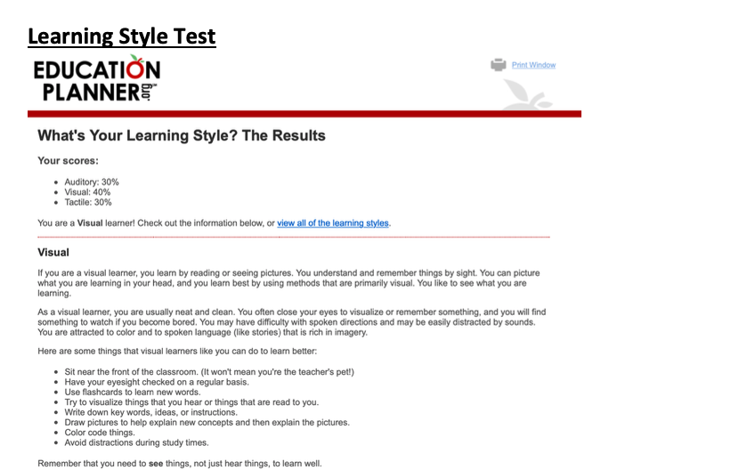
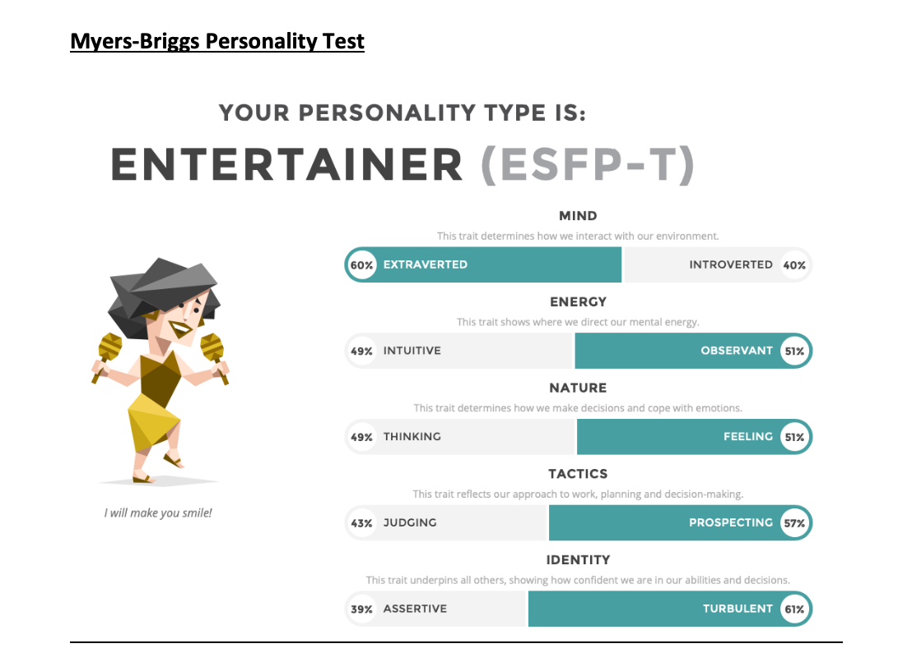
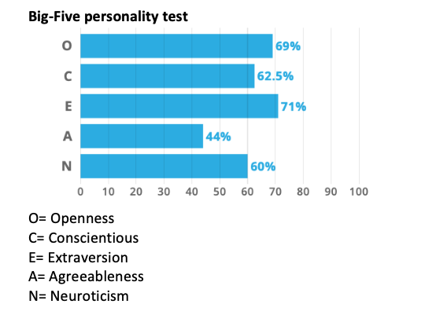
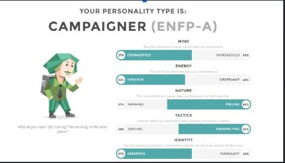
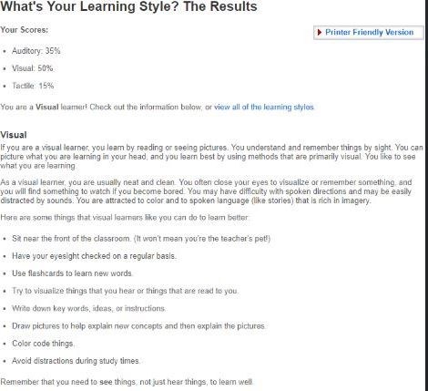
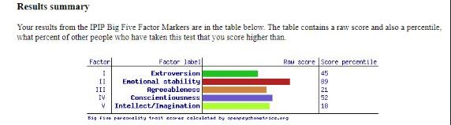
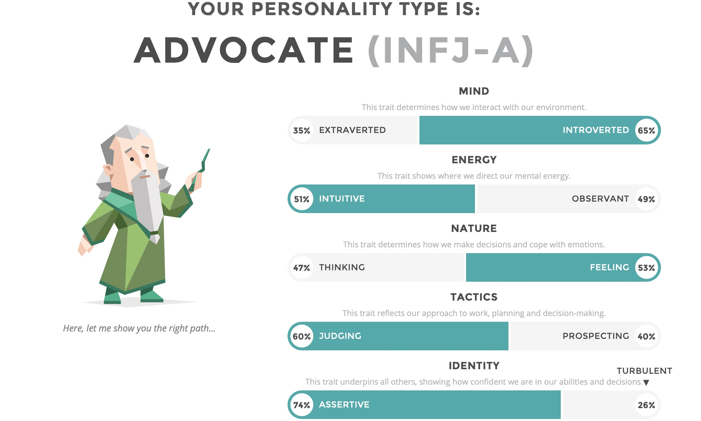
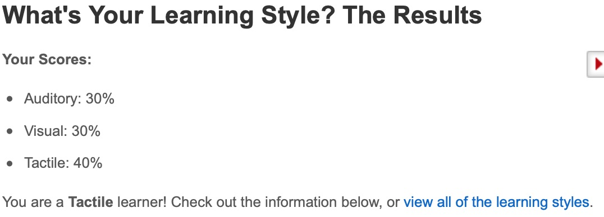
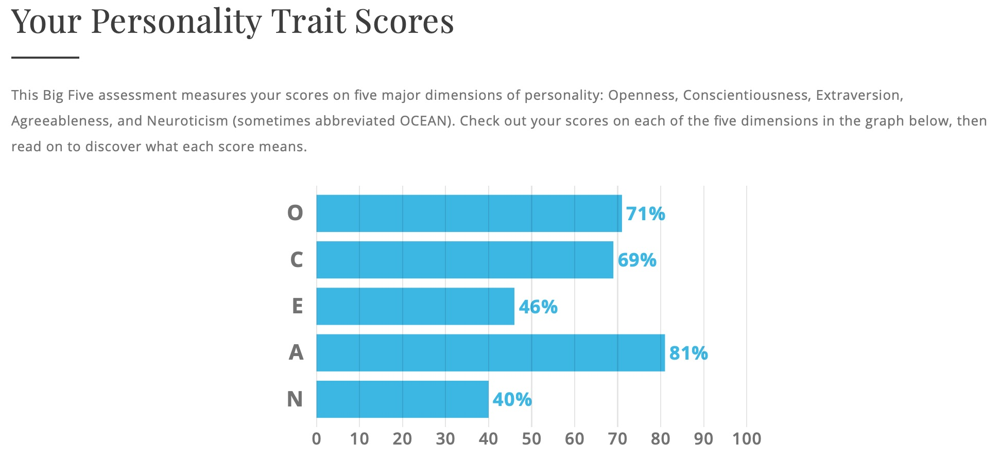

Team Profile
Thomas
My Myers-Briggs Test gives me the result of an ENTJ-A, or 'Commander'. It gives me a good indication as to my personality type. Working in a team is a specialty of ENTJs, but knowing the results in and of itself won't influence my behaviour. I won't need to take my results into account when working in a team, beyond predicting what situations I'll be comfortable in. As for the Learning Styles test, the results indicate that I'm a visual learner. This means little to me, I must admit. It doesn't really affect my behaviour in a team. I did the "Dark Triad personality test" and my results ended up with 2.9 Machiavellianism, 2.1 Narcissism, and 1.8 Psychopathy. This means little to me, but it's interesting to see how much of me is manipulative. But hey, that's a good thing in the corporate world, right? I don't think it affects how I'd work in a work in a team.
Rafi


My openness in the big five personality test and my prospecting trait in the Morrisby-Briggs test will help me work within a team environment as I will be able to hear different ideas and can implement actions for decision making and planning. However my agreeableness trait I will need to work on, as it would seem that I am not completely open to agree with other perspectives than mine which will impact my ability to work in a team as a team is all about working together and agreeing on the best method, even if they are not your own. When working with our team I should take these negative traits into account, as to find solutions to combat them, on the positive side I should embrace my extraversion by taking initiative in the team environment and building on ideas and motivating others.
Simon


When approaching work, it should be displayed through visual and auditory means to allow for a more consistent understanding in key concepts. It seems most of my decisions are subconsciously through feelings rather than rational thoughts- which could cause internal issues both short and long-term. I’m more extroverted than introverted, therefore, communication will be more prevalent, which will allow for proper management, organisation and communication with my peers to allow for effective and efficient teamwork. In addition, being emotionally stable along with understanding my work peers feelings will allow for a common ground and create a strong relationship among others. Furthermore, being assertive and conscientious allows others to rely on me in times of hardship.
Alex
Learning Style Test: Auditory: 35% Visual: 45% Tactile: 20% www.16personalities.com ISFP-T https://www.idrlabs.com/test.php ISFP https://openpsychometrics.org/tests/IPIP-BFFM/ IPIP Each of the tests don’t mean a whole lot to me, however they provide me with an idea of what kind of person I am and how others perceive me in public and such. These results shouldn’t influence my behaviour in a team as the tests are only an indication to what kind of person I am and shouldn’t affect the way I complete allocated tasks as I aim to complete the tasks within allocated time and not wait until it is very close to the deadline to finalise the task. When forming a team, I would use these results as a way to communicate with others, let them know what kind of person I am so that I won’t let the team fall behind.
Caner
Myers-Briggs test-

To be honest the results aren’t that important to me as its just an online test. And a short series of questions cant define an individuals personalities. However based on my results, as an advocate I’m a great team player as Im motivated it others, based on the descriptions. But however I should be looking at for, being compromised by a more ethically relaxed colleague as this apparently causes an unhealthy version of me. So when I’m creating groups I’m meant to not be one where there is someone like that.
Learning-style test

I knew I was already a more of a hands on learner so the results don’t really surprise me. These results can be important for those who don’t know their preferable leaning style, and this can help the identify and give the an edge ahead. This result influences my group behaviour to be the one whom is hands on rather the one whom researches. When taking this result as consideration for making a group I would surround myself whom strengths are my weaknesses such as someone is good visually or auditory to create a good balanced meta.
The Big 5-personalities test -

This test is important for me as it gives me an overview of some of my aspects and on looks of some stuff. It shows to me that all by positives is greater then my weaknesses which makes me want to continue with the thoughts in my life the same way. These results prove to me that in a team environment I’m very agreeable and open therefore identifying I will get along fairly well with everyone and will be able to co-operate with my peers as accordingly. When taking this account in group works I believe I could be the one who is the one whom takes leadership, as I’m strongly open allowing for everyones ideas to be collaborated.
Calvin